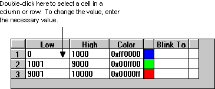

Defining data sources
The Animations dialog box groups similar properties together into categories. Each category is represented by a tab in the dialog box. You can select one or more properties from these tabs as needed. For example, suppose you want to horizontally fill a tank and change the foreground color simultaneously. To do this, you would select the HorizontalFillPercentage property on the Fill tab and the ForegroundColor property on the Color tab. Alternately, you could use the Fill Expert.
Regardless of the number of properties you select, you must connect to a data source for each property so that the necessary data can be retrieved and processed. The data source for one property can be completely different than that of another property.
Entering Data Source Syntax
To select a data source, enter its name in the Data Source field of the Animations dialog box, using the required syntax that tells DeltaV Operate what type of source contains the data. To assist you with the data source and its syntax, DeltaV Operate provides intelligent defaults, which allows the software to automatically fetch a data source based on an incomplete entry. For example, if your data source is a DeltaV Operate tag, and you enter AI1 in the Data Source field, DeltaV Operate connects to a .F_CV field in the database.
The following table lists the syntax for each data source type.
|
A DeltaV Operate tag |
Dvsys.tag.field where: tag is the database tag; and field is the database field. |
|
An I/O address |
server.io_address where: server is the name of the OPC server; and io_address is the I/O address of that server. |
|
An object property in a picture |
picture.object.property where: picture is the picture that contains the object; object is the object in the picture; and property is the object's property name. |
|
A picture property |
picture.property where: picture is the picture that contains the property; and property is the picture's property name. |
|
A global variable |
xxx.variable where: xxx is the global object; and variable is the name of the variable within the global object. |
|
An expression |
value operator value where: value is the primary value; operator is an operator relating to both values; and value is the secondary value. For more information on creating expressions, refer to Building Expressions. |
Some third-party OPC servers require characters in their syntax that are not parsable by the Expression Editor. If the OPC server syntax uses any characters that do not appear in the list of valid characters below, the server syntax must be enclosed within single quotes (') as follows:
ServerName.'Device:MyAddress'
In this example, ServerName is the name used to identify the third-party OPC server, and single quotes surround Device:MyAddress, the part of the syntax that contains the unparsable character(s). If an unparsable character is not enclosed in single quotes, an error message displays.
Valid Characters: all alphanumeric characters, hyphen (-), underscore (_), exclamation point (!), less than (<), greater than (>), pound (#), percent (%), dollar sign ($), ampersand (&), forward slash (/), backslash (\), pipe (|), opening bracket ([), closing bracket (]), and single quote (').
You will have to remove the added single quotes from any VBA scripts for operation to succeed.
If a single quote (') or a backslash (\) is a literal part of the addressing string syntax, it must be preceded by a backslash (\) in order for the character to be passed to the server as part of the address.
Refer to the documentation supplied with third-party OPC servers for information on server-specific syntax.
Selecting Data Sources from a List
In addition to entering a data source directly, you can also select a data sourcefrom a list using the Expression Builder dialog box. This dialog box lets you select the data source you want to use, or create expressions by combining two or more data sources together. To open the Expression Builder dialog box, click the ellipsis buttonnext to to Data Source field on the Animations dialog box. The topic Building Expressions describes how to create expressions, and describes the components of the Expression Builder.
On the Expression Builder dialog box click the tab you want and select the source from the list. For example, to select the DeltaV tag AI1, click the Data Server tab, select DVSYS from the browse dialog, and browse for the tag.
If an existing object contains properties, you can also select those properties from a list. For example, to select the Width property of a picture window:
Click the Pictures tab.
Select the picture you want to modify.
In the Properties list, click the WindowWidthPercentage property.
As you make selections from the Expression Builder, the text in the lower window changes to match your selections, displaying the expression as you build it. If applicable, the tolerance, deadband, or refresh rate also appear in this window.
Filtering Data Sources
Using the Expression Builder dialog box, you can filter data sources to search for specific data at any level. This is a helpful tool for eliminating data that you don't need to access.
To filter data sources, enter the data source string in the Filter field and click Filter. (For the FIX Database tabbed page, the Filter button appears as an F.) To select from the list box, click the down arrow to the right of the field. You can also search for wildcard entries by using an asterisk in the field. For example, to view all of the F_ fields for blocks, enter F_* in the Filter field.
Specifying Data Conversions
After you enter a data source, you need to select the type of data conversion to apply to the data from that source. A data conversion defines how the incoming data should be processed or formatted so that your objects behave according to the properties you have assigned to them. It also defines how the outgoing data calculates errors, what those errors mean, and how they are conveyed to operators.
The following table lists the types of data conversions you can specify in the Data Conversion area of the Animations dialog box.
|
Range |
A range of values on which to animate an object. You can enter the minimum and maximum input and output values. When you enter a range of values, the input values are mapped into the output values, allowing you to apply linear signal conditioning. You can also specify if input is allowed to the range. |
|
A lookup table. Using a lookup table is like using a spreadsheet, as the following figure shows.  When completing a lookup table, you can define a single lookup value or a range of lookup values for each row in the table. In addition, you need to enter an output value. Depending on the selected property, this value may be a color, string, fill style, edge style, or numeric value. When the incoming value from the data source matches an entry in the table, it changes the selected property to match the output value. The buttons below the lookup table help you modify the appearance of the table. You can insert, modify, or delete rows in the table by clicking the appropriate buttons. Or, by clicking the Advanced button, you can assign toggle values, a shared lookup table, a toggle rate, and a tolerance value for exact match thresholds. For more information on these advanced options, refer to the Animating Properties Using Color and Classifying Animations Errors, later in this topic. For more information on using the toggle rate, refer to Using Blinking Thresholds in the topic Animating Properties Using Color. |
|
|
Format |
How to format the data. You can specify:
For more information on formatting options, refer to Adding Data Links in the topic Adding Objects to Pictures or the online Help. |
|
Object |
No signal conditioning. The data received from the data source is processed or displayed at that exact value. If an object contains a property that provides the desired animation, you can connect to that property. This is because every object has the ability to perform permanent connections from one of its properties to another. Essentially, the animation object only transforms data from the property of one object to the property of another object. |
Sample Table Data Conversion
The following table data conversion has been set up for the FillStyle property of an oval.
Using these definitions, the oval fill style appears as shown in the following table.
Classifying Animations Errors
DeltaV Operate lets you define how any animation behaves if an error occurs. Using the Output Error Mode field of the Animations dialog box, you determine how the output data appears to operators. From this field you select the desired error classification based on the specified data conversion method. The output data appears to the user as the specified error type when the default value is reached.
The following table details the error output you can define for a particular data conversion type.
The default for the Output Error Mode setting in the definition of a Datalink is the Use Error Table option, causes an animation to display values as configured on the Animations Data Error Defaults tab of the User Preferences dialog. In contrast, the Use Current Output option causes an animation to display whatever data is returned at the time an error occurred, even if it currently has a bad status. It is recommended that you specify the default option, Use Error Table.
For more information on the output fields, refer to the online help, and the Animating Properties Using Color section.
Error handling in DeltaV Operate is global, not per-object. You can choose the behavior of a single object based on an error condition; however, because of performance reasons, the error classification is applied system-wide.
Specifying OPC Errors
DeltaV Operate provides predefined error defaults that you can customize for your needs. The Animations Data Error Defaults tabbed page of the User Preferences dialog box contains the default OPC error strings and values that display when an error occurs. The tabbed page is divided into three areas:
Linear Animation Object Defaults - Contains six numeric, OPC failure strings based on the Linear object using a Range data conversion.
Format Animation Object Defaults - Contains six OPC strings based on the Format object using a Format data conversion. The error string is displayed in a Data link.
Lookup Animation Object Defaults - Contains six numeric table, string table, and color table entries based on the Lookup object using a Table data conversion.
The error defaults are global, resulting in better system performance. You can modify the defaults to make error messages more intuitive for your specific process. For example, when a device error occurs, Data links display by default the text "XXXX". To create a more intuitive message for device error messages in the future, enter an alternate string in the Device field of the Format Animation Object Defaults area. For example:
Device is not working!
By changing the defaults, you can configure error messages with the text and color that you want, thereby customizing your error handling scheme. For more information on the fields of the Animations Error Defaults tabbed page, refer to the online help.